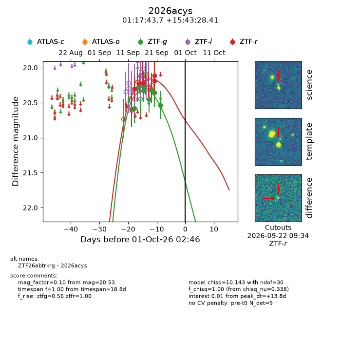
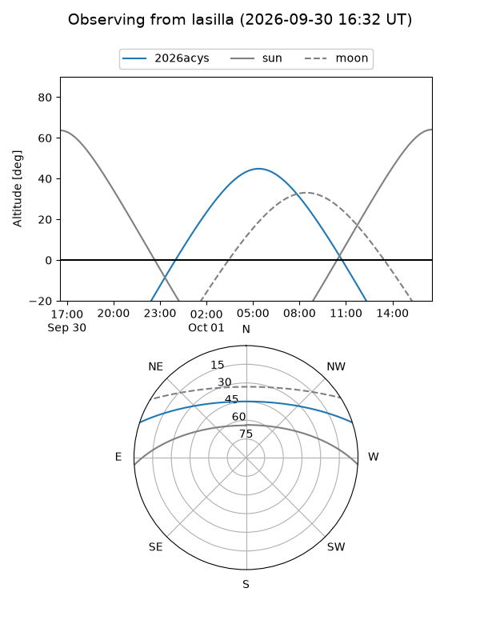
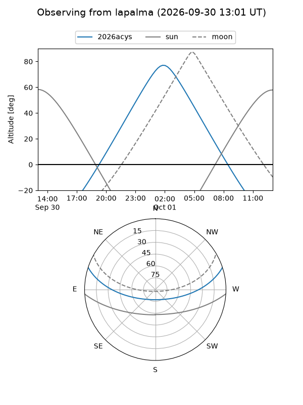
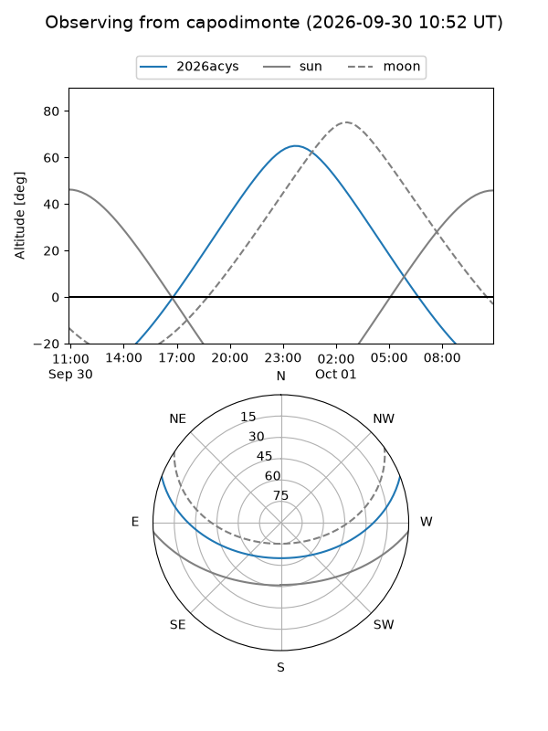
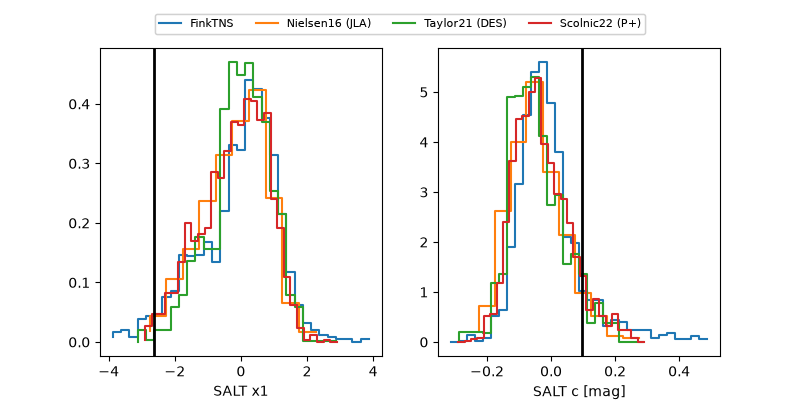

2026acys
Target 2026acys at 2026-10-01 14:23
Aliases and brokers:
FINK-ZTF: ztf.fink-portal.org/ZTF26abtrkrg
Lasair-ZTF: lasair-ztf.lsst.ac.uk/objects/ZTF26abtrkrg
ALeRCE-ZTF: alerce.online/object/ZTF26abtrkrg
YSE-PZ: ziggy.ucolick.org/yse/transient_detail/2026acys
TNS name: wis-tns.org/object/2026acys
Direct TNS query: direct search
alt names
ZTF26abtrkrg (ztf,fink_ztf)
2026acys (tns,yse)
Coordinates:
equatorial (ra, dec) = 19.4319,+15.72456
equatorial (HMS+DMS) = 01:17:43.66,+15:43:28.41
galactic (l, b) = (132.1722,-46.67497)
Flags:
TNS type: nan
peak dt: +14.3
Photometry:
last ztfg=20.53, ztfr=20.11
10 ztfg, 5 ztfr detections
Lightcurve

Visibility



Additional plots
